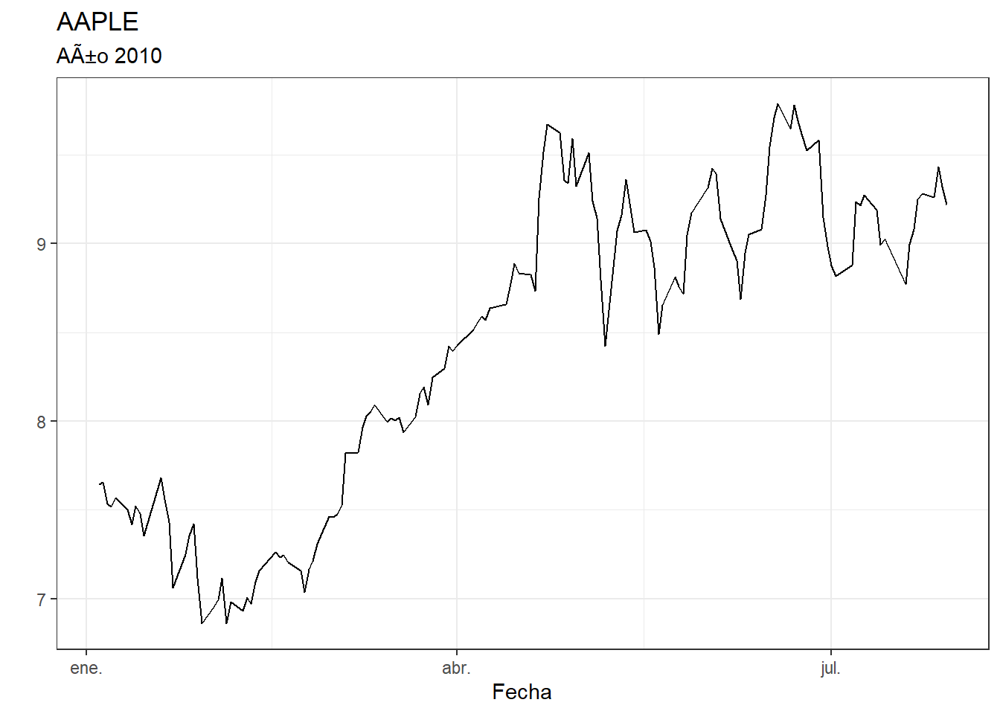
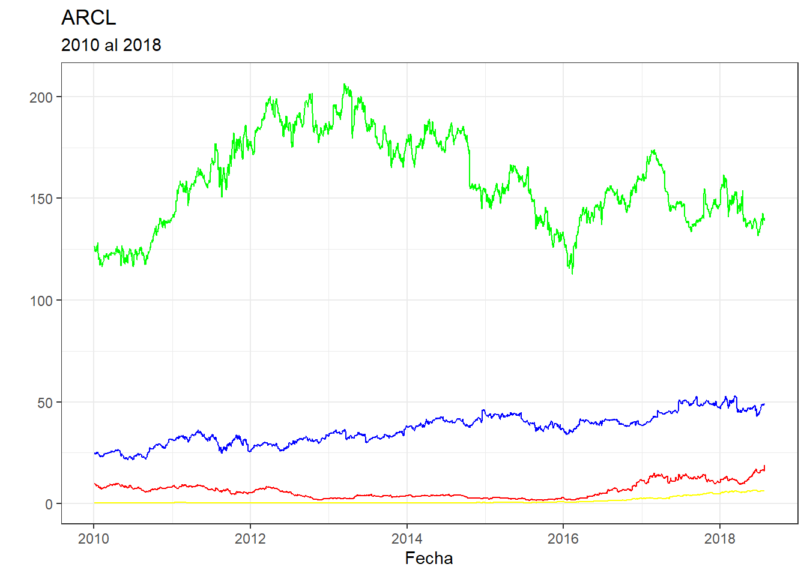
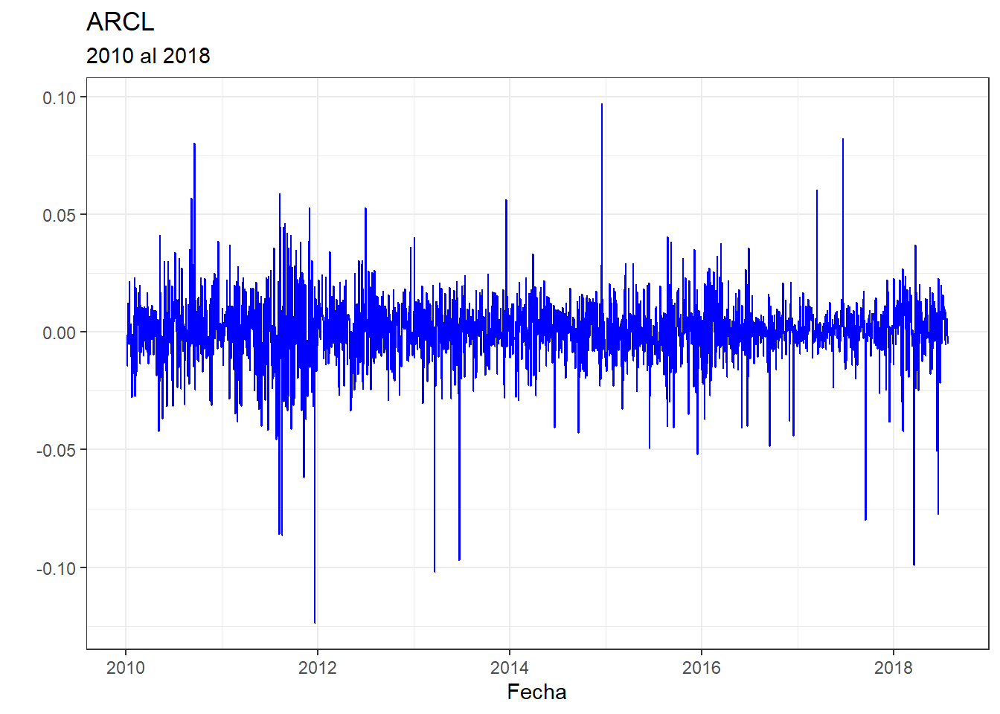
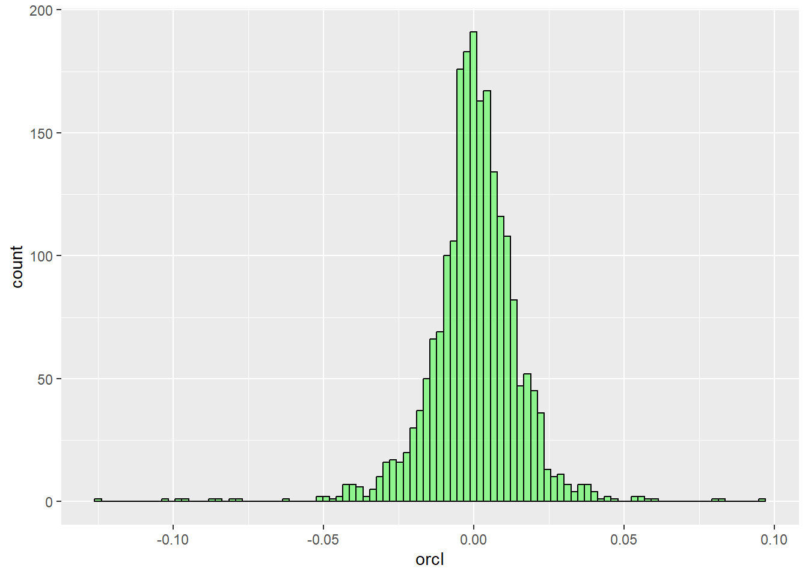
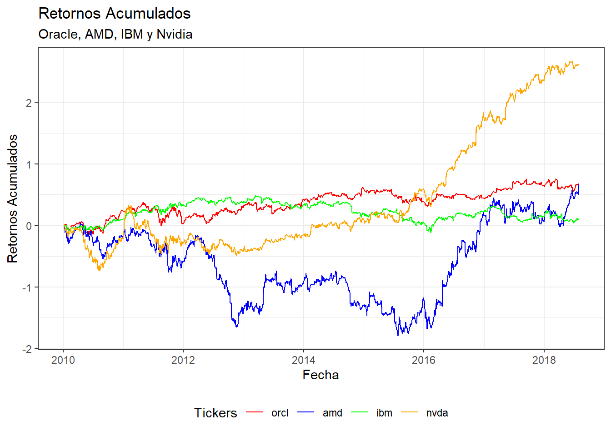

library(tidyverse)
library(tidyquant)
library(quantmod)
getSymbols("AAPL",
src = "yahoo",
from = "2010-01-01",
to = "2010-07-30",
periodicity = "daily")[1] "AAPL"Notebook 03
Sebastián Egaña Santibáñez
Nicolás Leiva DÃaz
https://www.linkedin.com/in/sebastian-egana-santibanez/
Quantmod es una de las librarÃas financieras más utilizadas para la obtención de precios.
La manera más simple de obtener precios es la siguiente:
[1] "AAPL"Solo debemos declarar el simbolo (instrumento financiero), el perÃodo y la periodicidad del instrumento.
La librerÃa también posee una forma simple de gráficar las series obtenidas:
Otro ejemplo:
Para llevar esto a ggplot, deberÃamos aplicar algunas funciones convirtiendo el set datos obtenido en un formato adecuado.
Graficamos:

[1] "ORCL" "AMD" "IBM" "NVDA"Graficamos:
g1 <- ggplot(df_all) +
geom_line(mapping = aes(value, ORCL.Close), color = 'blue') +
geom_line(mapping = aes(value, AMD.Close), color = 'red') +
geom_line(mapping = aes(value, IBM.Close), color = 'green') +
geom_line(mapping = aes(value, NVDA.Close), color = 'yellow')
g1 <- g1 + labs(title = "ARCL", subtitle = "2010 al 2018") + xlab("Fecha") + ylab("")
g1 <- g1 + theme_bw()
g1
Pero esto no tiene mucho sentido, debido a las diferencias de escala de cada una de las acciones. La medida básica de comparación para acciones corresponde a los retornos.
La fórmula básica para obtener retorno, corresponde a la variación porcentual:
\[ r_t = \frac{p_t - p_{t-1}}{p_{t-1}}\] en Finanzas también se puede trabajar con una expresión logaritmica:
\[ r_t = ln( \frac{p_t}{p_{t-1}})\] Que converge al mismo valor cuando el intervalo tiende a cero.
Calculamos de las dos maneras:
Veamos algunas diferencias entre cada data set (cargamos la librerÃa vtable para esto):
| Variable | N | Mean | Std. Dev. | Min | Pctl. 25 | Pctl. 75 | Max |
|---|---|---|---|---|---|---|---|
| orcl | 2156 | 0.00031 | 0.015 | -0.12 | -0.0066 | 0.0082 | 0.097 |
| amd | 2156 | 0.00031 | 0.035 | -0.28 | -0.017 | 0.017 | 0.42 |
| ibm | 2156 | 0.000042 | 0.012 | -0.086 | -0.0059 | 0.0062 | 0.085 |
| nvda | 2156 | 0.0012 | 0.024 | -0.12 | -0.011 | 0.013 | 0.26 |
| Variable | N | Mean | Std. Dev. | Min | Pctl. 25 | Pctl. 75 | Max |
|---|---|---|---|---|---|---|---|
| orcl | 2156 | 0.00042 | 0.015 | -0.12 | -0.0066 | 0.0082 | 0.1 |
| amd | 2156 | 0.00093 | 0.036 | -0.24 | -0.017 | 0.018 | 0.52 |
| ibm | 2156 | 0.00012 | 0.012 | -0.083 | -0.0059 | 0.0062 | 0.089 |
| nvda | 2156 | 0.0015 | 0.025 | -0.12 | -0.011 | 0.013 | 0.3 |
Graficamos:

Podemos también construir un histograma de los retornos:

¿Algún comentario sobre la distrubución? Veamos denuevo las medidas de resumen:
| Variable | N | Mean | Std. Dev. | Min | Pctl. 25 | Pctl. 75 | Max |
|---|---|---|---|---|---|---|---|
| orcl | 2156 | 0.00031 | 0.015 | -0.12 | -0.0066 | 0.0082 | 0.097 |
| amd | 2156 | 0.00031 | 0.035 | -0.28 | -0.017 | 0.017 | 0.42 |
| ibm | 2156 | 0.000042 | 0.012 | -0.086 | -0.0059 | 0.0062 | 0.085 |
| nvda | 2156 | 0.0012 | 0.024 | -0.12 | -0.011 | 0.013 | 0.26 |
Attaching package: 'reshape2'The following object is masked from 'package:tidyr':
smithsg2 <- ggplot(reshape) + geom_line(mapping = aes(fecha,value, color = variable))
g2 <- g2 + labs(title = "Retornos Acumulados", subtitle = "Oracle, AMD, IBM y Nvidia")
g2 <- g2 + theme_bw() + xlab("Fecha") + ylab("Retornos Acumulados")
g2 <- g2 + scale_color_manual("Tickers", values = c("red","blue","green","orange"))
g2 <- g2 + theme(legend.position = "bottom")
g2
Una de las principales medidas de riesgo es el Value at risk o VaR. Se define como “cuál serÃa la pérdida que solo será excedida en p*100% veces en los próximos k dÃas”. En este sentido, nos preguuntamos por la mayor pérdida que se genera con un x% de probabilidad.
Veamos un ejemplo:
Determinamos las acciones:
Generamos una función para obtener los precios:
# preparing one table in common for all the downloaded tickers - You can change
for (i in 1:length(symbol_name)) {
prac <<- Ad(getSymbols(symbol_name[i], from = FROM, to = TO,auto.assign=FALSE))
if (i==1) {
price <<-prac
} else{
price <<- merge(price,prac)
}
}
rm(prac) # prac is just temporary variable to remove
colnames(price) <- symbol_name #puting the names of the sharesCalculamos los retornos en base a log:
Obtenemos el VaR:
Cambiamos el método:
Para obtener el monto monetario aplicamos la siguiente formula:
\[ VaR (\text{en pesos}) = V_{PF}(1-exp(-VaR)) \] Asumamos que tenemos una posición de 2.000.000:
Gabriel Cabrera G., Introducción a las finanzas quantitativas, https://finance-r.netlify.app
https://rpubs.com/gazdavladimir/1039600
https://www.r-bloggers.com/2022/02/nonparametric-value-at-risk-var/
https://www.youtube.com/watch?v=0N7XBk7YA5A&list=PLJqpMAAwcLuus0FqGByq8FC3ukwYcJz7A&index=24&t=151s